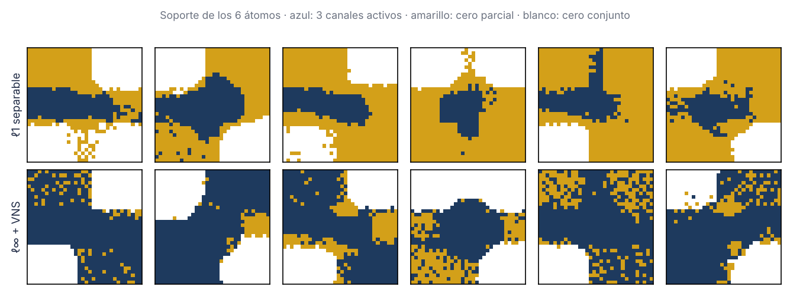
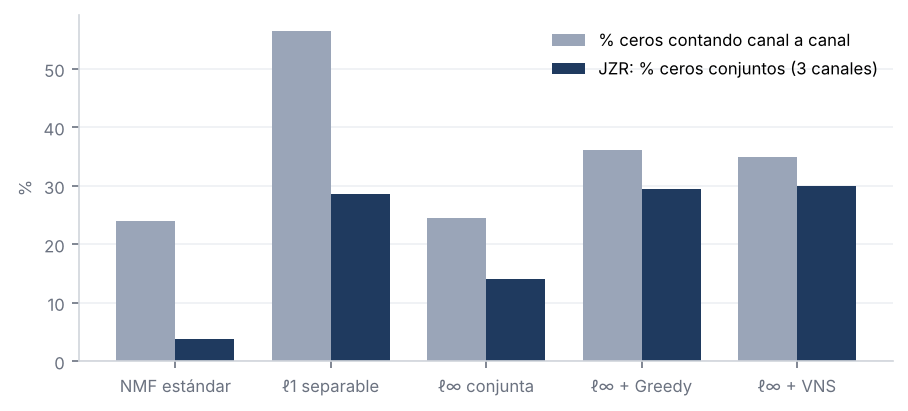
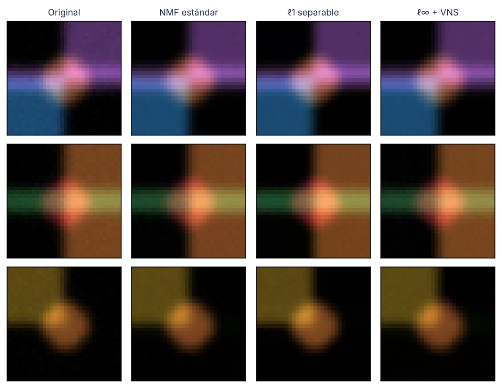
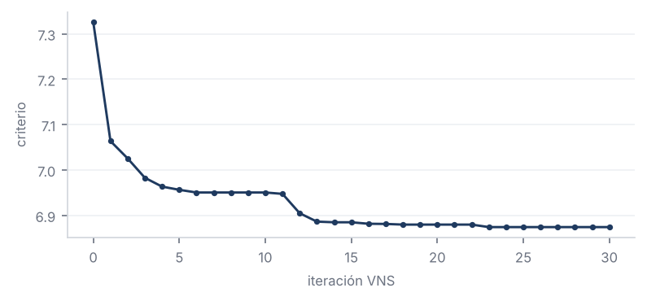

| Método | εF | PSNR | SSIM | JZR | Ceros por canal | % de ceros que son conjuntos | Hoyer |
|---|---|---|---|---|---|---|---|
| NMF estándar | 4,22 % | 39,7 dB | 0,954 | 3,7 % | 24,0 % | 16 % | 0,448 |
| ℓ1 separable | 4,66 % | 38,8 dB | 0,940 | 28,6 % | 56,4 % | 51 % | 0,500 |
| ℓ∞ conjunta | 4,54 % | 39,0 dB | 0,928 | 14,0 % | 24,5 % | 57 % | 0,419 |
| ℓ∞ + Greedy | 3,79 % | 40,6 dB | 0,944 | 29,4 % | 36,2 % | 81 % | 0,441 |
| ℓ∞ + VNS | 3,37 % | 41,7 dB | 0,958 | 29,9 % | 34,9 % | 86 % | 0,458 |
Azul = los tres canales activos; amarillo = cero parcial (algún canal a cero, pero no todos); blanco = cero conjunto. Con ℓ1 dominan las zonas amarillas: ceros que no eliminan el píxel. Con ℓ∞ + VNS los ceros pasan a ser mayoritariamente conjuntos (blancos) y el amarillo queda reducido a puntos sueltos.



Modelo. Para cada canal c: Xc ≈ WcHc, minimizando Σc ½‖Xc − WcHc‖²F + λ Σi,j maxc Hc[i,j], con actualizaciones multiplicativas y columnas de W normalizadas (evita que la penalización se esquive reescalando).
Greedy (conjunto activo). En cada ronda anula los grupos con max(HR, HG, HB) < τ, con τ creciente, en los tres canales a la vez; reajusta sobre el soporte restante y para cuando el criterio (error + α·% de grupos activos) deja de mejorar.
VNS (Variable Neighbourhood Search). Sacude la solución con vecindarios de tamaño κ creciente (perturbación de W y reapertura del soporte); la búsqueda local es ajuste ℓ∞ + Greedy. Si mejora, acepta y vuelve a κ = 1.
